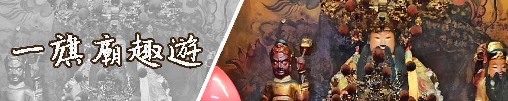

專題研究計畫完成日期：2020年2月28日
連結至本隊學校首頁：樹德家商
學校住址：807高雄市三民區建興路116號
指導老師：鄧朱雅老師、李又潔老師
多少學生參與這個專題研究計畫：六人
我們的年齡為：十六～十七歲
專題研究計畫連絡信箱：joyy35436365@gmail.com
壹、我們參加的網界博覽會類別
地方歷史古蹟
貳、地方社區說明
旗山天后宮位於高雄市旗山區，此地區位於高雄市地理中心，北鄰杉林區，西北鄰內門區，西及西南鄰田寮區、燕巢區，東鄰美濃區，東南接臺灣屏東縣里港鄉，南接大樹區。本區屬於熱帶季風氣候區，高溫多雨。
參、專題研究計畫概要
臺灣宗教信仰是臺灣民間廣為流傳的傳統信仰，我們為更加的深入了解臺灣的傳統文化，所以選擇了廟宇這個主題，因此我們找到了位於高雄旗山的天后宮，主祀海神媽祖，是旗山地區的信仰中心。旗山天后宮近年來也舉辦各式不同的活動，藉由媽祖的信仰力量，凝聚群眾同樂，推廣全民做運動達到身心健康的目的，將宗教信仰的力量，透過不同的方式融入信眾的日常生活之中。
肆、我們的網際網路環境
我們大部分都是利用寒假在家的時間來蒐集資料，網路逐漸進步的時代，讓我們上網搜尋到的資料能馬上上傳到雲端。而無法在家裡完成的工作，我們到開學後的時間共同討論完成，這是最有效率且最快完成的方法。
伍、我們克服的難題
1.團隊時間無法配合
由於各個成員住地方較為偏遠，而且又到了放寒假的時間大家都有事，所以能去的時間不統一，因此我們為了克服這難題，我們把時間選在多數成員能去的一天，可以去的在離旗山較近的捷運站集合，而不能去的成員則在家中找資料。
2.武漢肺炎疫情嚴重影響
大家因為疫情的影響開學延後，能出來討論的時間大幅減少，為了解決這問題我們選擇在通訊軟體把大家需要做的工作分類完成，且在開學前把分配好的作業完成，在家不能完成的工作可以到開學後大家在校的時間和學校開放的電腦教室加強完成這份網頁作品。
陸、心得箴言
透過這一次的訪問，讓我們更加深入的了解到廟宇的成立是如此不易。而我們這組的主題是旗山天后宮，因為時間不好配合，我們克服了許多問題，還是完成這次的專題，也謝謝班導在假期中抽空陪我們去訪問，在訪問的過程中，廟公非常的歡迎我們，對於我們的提問也相當耐心，也和我們說了許多關於廟宇的事情，如果我們沒有參加這次的網界比賽，也沒有選到天后宮的話，我們可能都不會去了解到這些廟宇文化。
壹、宗旨與目標
這次專題計畫選擇採訪旗山天后宮是不僅是為了能夠更深入了解臺灣宗教信仰，也讓我們了解到廟宇的特色建築和歷史。在這分作品完成之際也希望能夠做到我們的宗旨─透過我們的網頁，讓更多人近一步了解天后宮。
貳、你們從事本次網界博覽會專題研究計劃的研究與活動如何有助於你們的學校教學和課程需求？
本身身為資處科的我們，不僅僅是課程需求，也可以把我們學到的技術使用在這網頁作品上，不僅把它學以致用，也透過修修改改不停練習更加讓我們熟練，而在找尋資料的過程也讓我們更加了解臺灣地方的文化。
在完成這份網頁作品的過程中，我們也學習到了很多，像是採訪的過程中如何及時應變、蒐集資料時如何快速的找到相關資訊、亦或是網頁的應用和美術製作等，都會讓我們增加技巧和能力的，而透過這次的網頁製作也讓我們收穫很多。
叁、你們使用了那些資訊科技來完成你們的網界博覽會專題研究？
| 設備 | 工具 | 用途 |
| 硬碟 | 電腦 | 網頁製作、影像製作、蒐集資料 |
| 手機 | 拍攝、採訪記錄、組員間聯繫 | |
| 軟體 | Adobe Photoshop cc 2018 | 製作、編輯圖片 |
| Adobe Dreamweaver CC 2018 | 網站製作 |
肆、你們用什麼方法透過線上或個人接觸來扮演你們網界博覽會專題研究計劃「大使」或發言人角色？
我們組採取分工制，我們以各個組員的強項來做分工，每個組員都需要完成各自的工作，但我們也可以讓各組員對各項工作提出意見或是修改，畢竟不同的想法會有不一樣的成果。
伍、你們的專題研究計劃對你們的產生了什麼樣的影響和衝擊？
這次的專題研究讓我們更進一步的了解廟宇的傳統歷史、建築設計和文化特色，在最初選定要介紹廟宇的時候，在書上看到了旗山天后宮的介紹，讓我們想要進一步的了解，在大家蒐集資料的過程中，知道了各神尊的歷史由來。
陸、專題網頁作品智慧財產權說明
在這次的網頁製作中，我們所呈現的資料內容，都是組員們花費心思所製作出來的作品，其中包括了採訪時拍攝出來的照片、網頁中需要呈現的影像或是上網搜尋到的資料，我們都是經過當事人同意，才放到網站。而上網蒐集的資料，我們會遵守智慧財產權，把資料來源標示清楚，尊重創作者的。
| 身分 | 工作項目 | 貢獻比例 |
| 學生 | 一、資料收集：全組人員 | 60% |
| 二、擬定訪問內容：全組人員 | ||
| 三、擬定採訪計畫：陳絮庭 | ||
| 四、採訪相關人士：王俊傑 | ||
| 五、記錄訪談內容：陳絮庭 | ||
| 六、拍攝及攝影：劉冠甫、蔡喬安 | ||
| 七、資料統整：陳絮庭、郭佳樺、郭佳蓁、蔡喬安 | ||
| 八、文章編輯：劉冠甫、王俊傑 | ||
| 九、網頁設計：王俊傑 | ||
| 十、網頁製作：王俊傑 | ||
| 十一、影像處理：郭佳蓁 | ||
| 十二、填寫進度報告：劉冠甫 | ||
| 指導老師 | 一、專題網頁指導：鄧朱雅 | 20% |
| 二、專題網頁文字校閱：李又潔 | ||
| 受訪人士 | 接受採訪及拍攝：旗山天后宮廟公 | 20% |